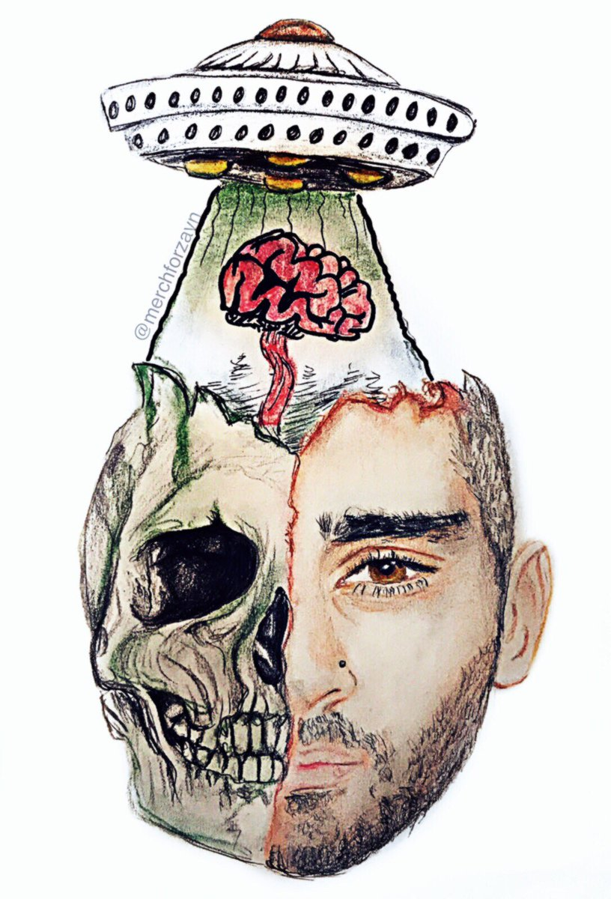

Personal Works
 INZAYN
Colored Pencils on Paper
13 x 24 in
year: 2017
INZAYN is a conceptual piece that I made as a submission for a merchandise piece for my favorite artist, Zayn Malik. In the watermark, it states @merchforzayn which was an account dedicated to the work that my friend and I planned on showcasing to his team. During this time, on Twitter, I once went by the name “ZAYNGONADA”, which was an alias in tribute to zayn and my obsession with mangonadas, a mango speciality known in Latin American countries. I posted my art on this account from 2014-2018, and during this period, I was able to get noticed by Zayn multiple times. I knew his team through a mutual friend who had access to a lot of information from his team, at the time. I submitted this piece for a t-shirt idea in hopes of obtaining a chance to work and collaborate with Zayn. This was the moment I realized that with my artistic abilities, I would be able to collaborate with celebrities in order to create merchandise pieces that are meaningful to both fans and the musician themselves. I know it’s often a hassle for musicians who don’t have the artistic abilities to create drawings or mockups to convey their vision within merchandise pieces or album cover works. Being able to get the chance to work with musicians would be a dream, and hopefully in the future I will find myself getting to change it into a reality.
In this piece, I portray Zayn Malik’s face spliced with both a skeleton and flesh side profile. Also what is seen is his brain getting abducted by an alien spaceship that is hovering over his head. I played on the words “insane” to “inzayn” to show that he is losing his mind due to the aliens capturing his sanity. I went with the ideas of aliens due to his debut album discussing his love for aliens and the concept of going into a different reality.